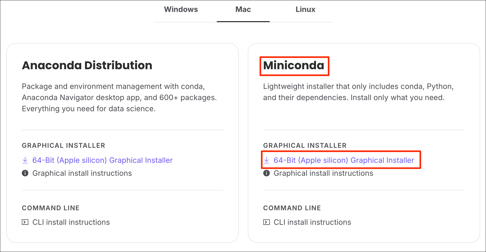
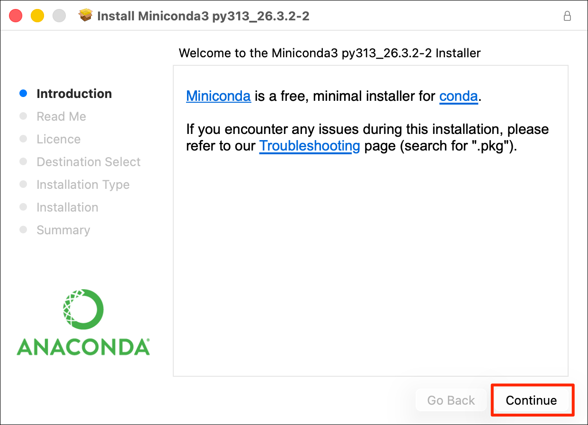
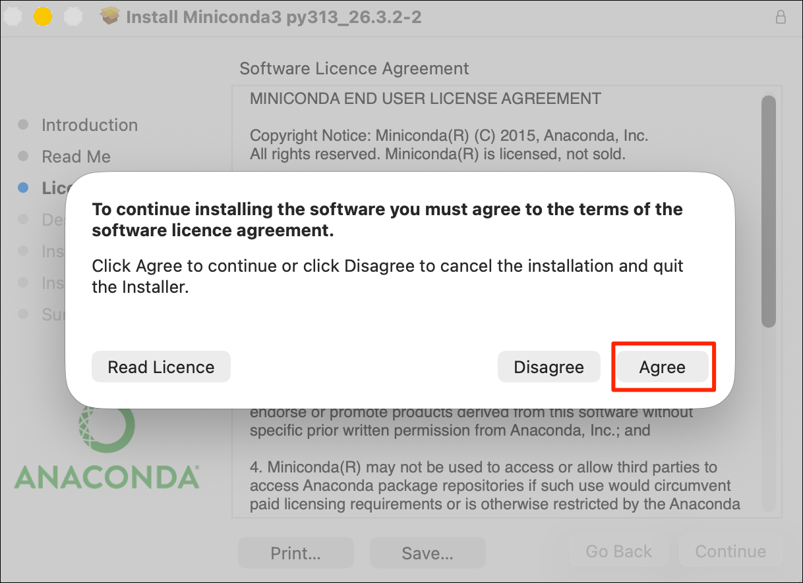
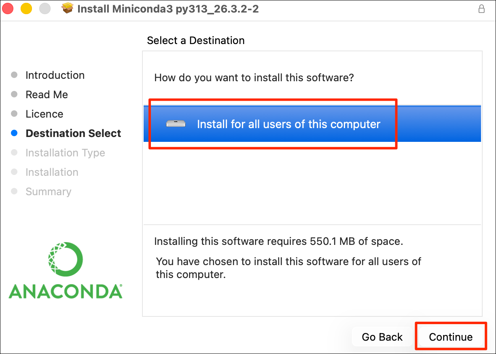
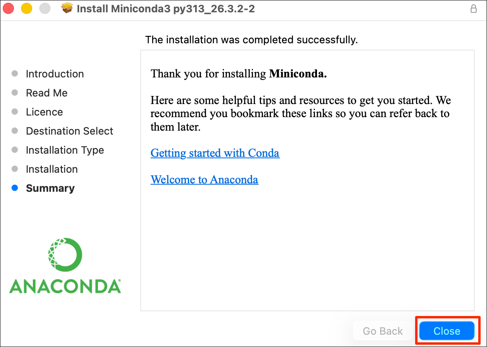
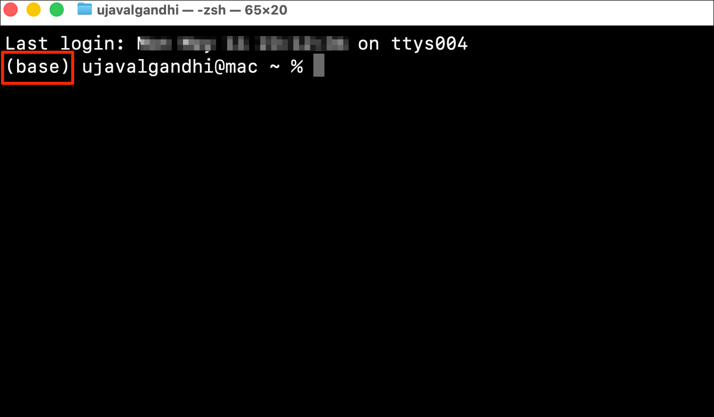

An easy and reliable way to get a Python installation on your system
is via Anaconda. Anaconda
provides the conda command that is used to install Python
and various packages. For our course participants, we recommend using
conda for our courses as it is well tested on all major operating
systems and works reliably on most setups.
Use of Conda by large commercial companies may require a license. For more details and alternatives, read our Frequently Asked Questions (FAQs).
Anaconda offers multiple installers.
conda
command.Miniconda is the preferred installation for all our courses.
64-bit (Apple silicon) Graphical Installer under Miniconda.
It will download a .pkg installer.




base environment activated by default.
Your setup is now complete.
Anaconda’s Terms of Service requires commercial entities with more than 200 employees purchase a license. Python ecosystem has many other package managers that are offered under more liberal licensing terms. Once you learn the basics of creating environments and installing packages using conda, you may consider switching to any of the following alternatives.
Working with Geospatial Python requires installing binary packages
such as GDAL - which are not supported by pure Python package
managers like pip or uv. You can read more
about Python
package managers which details all the options and their
tradeoffs.
If you want to report any issues with this page, please comment below.